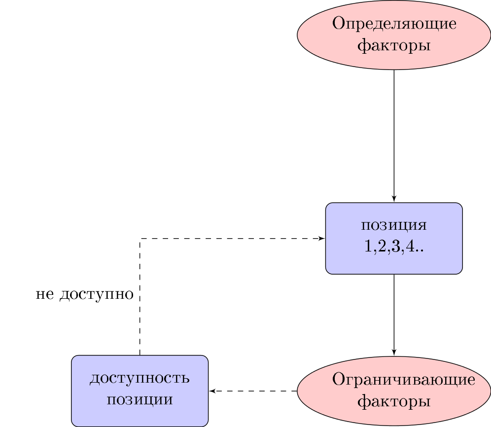
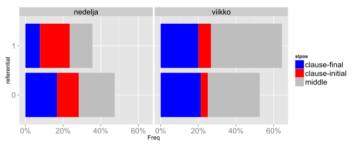

Утром, только проснувшись, Алия с Линой пошли кататься на велосипедах. Потом мы поехали купить Алие новые лыжи.
Заседание продлится два часа.
Папа часто играет в бадминтон.

неделю
| 0 | 1 |
|---|---|
| 7144 | 1074 |
viikon
| 0 | 1 |
|---|---|
| 7938 | 1943 |

| 0 | 1 | |
|---|---|---|
| 0 | 53.23 | 58.5 |
| 1 | 36.14 | 31.79 |
| 2 | 8.92 | 8.44 |
| 3 | 1.38 | 1.09 |
| 4 | 0.31 | 0.18 |
| 5 | 0.01 | 0 |